인스타 캐러셀 — 밝은 테마 후보 5안
검은 바탕을 밝은 바탕으로 바꿉니다. 같은 카드(리포트 #42 · 9월 입주 물량)를
5가지 디자인 언어로 실제 렌더한 비교입니다. 표지 · 대형 숫자 · 차트 세 장씩
붙였습니다 — 카드 6장 중 3~4장이 숫자·차트라서 그쪽이 실제 선택 기준입니다.
2026-08-29 · 4:5 (1080×1350) · 채널 임장로그 · 이 페이지는 검색 색인 제외
테마는 캐러셀·릴스가 함께 씁니다 — 하나를 고르면 릴스(9:16)도 같은 색으로
바뀝니다. 블로그(부동산 인사이트) 3테마는 건드리지 않습니다.
지금 적용된 안
오늘 자 캐러셀에 적용
D · 앰버 포스터
흰 바탕 + 지금 쓰던 앰버. 검은 굵은 선으로 위아래를 잡고 활자를 크게 씁니다.
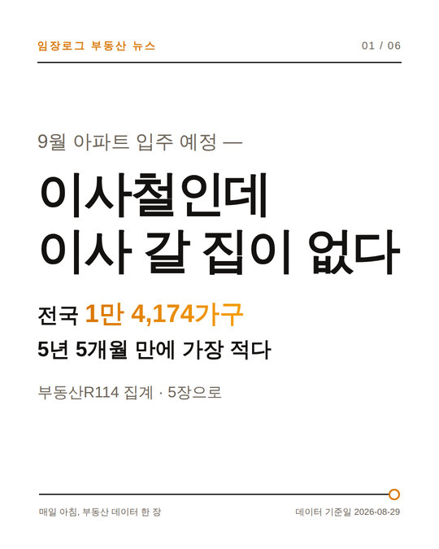
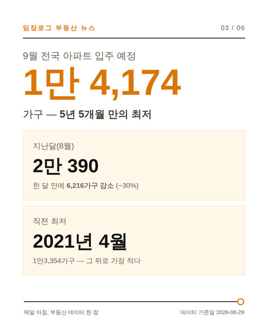
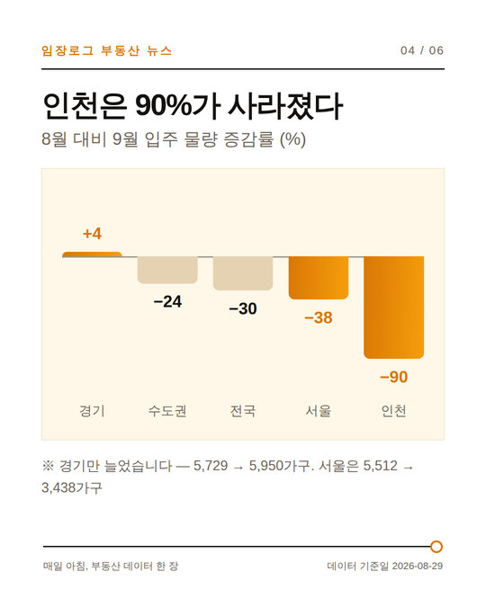
서체 제목 Gothic A1 900 (자간 좁게) · 본문 Noto Sans KR
모서리 직각 · 구분 검은 3px 선
앰버를 그대로 써서 기존 게시물·릴스와 이어집니다. 흰 바탕이라도
검은 선과 굵은 활자 덕에 피드에서 묻히지 않습니다.
앰버 글자는 흰 바탕에서 대비 3.5:1 — 큰 숫자·제목에만 쓰고
작은 본문에는 쓰지 않도록 맞춰 뒀습니다.
바꿀 수 있는 다른 안
후보 A
아이보리 명조
따뜻한 종이색 바탕 + 테라코타. 명조 제목으로 차분하게.
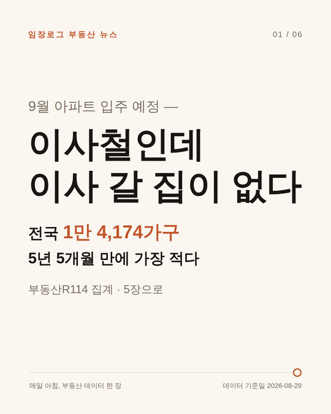
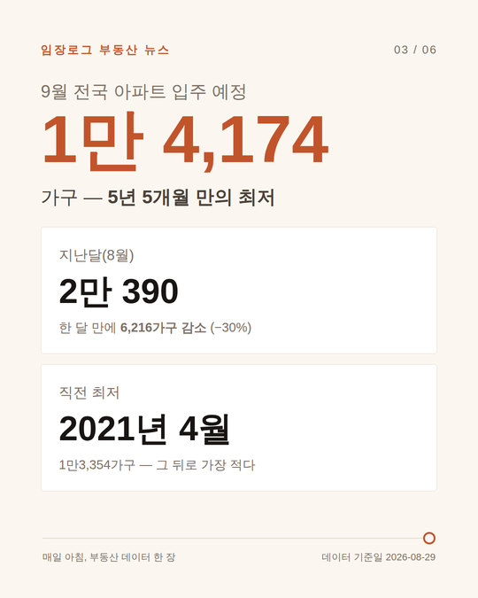
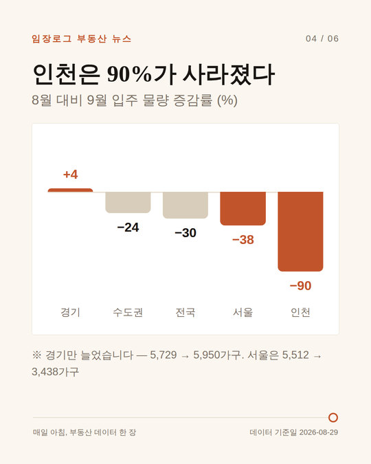
서체 제목 고운바탕(명조) · 본문 IBM Plex Sans KR
모서리 6px
다섯 안 중 가장 점잖습니다. 중개 실무 이야기와 톤이 잘 맞습니다.
차분한 대신 피드에서 눈에 덜 띕니다. 명조는 작은 글자에서 흐려 보입니다.
바꾸려면: insta-ivory 팔레트를 insta 로 옮기면 됩니다.
후보 B
민트 리포트
완전한 흰 바탕에 민트 블록만. 테두리 없이 면으로 구분합니다.
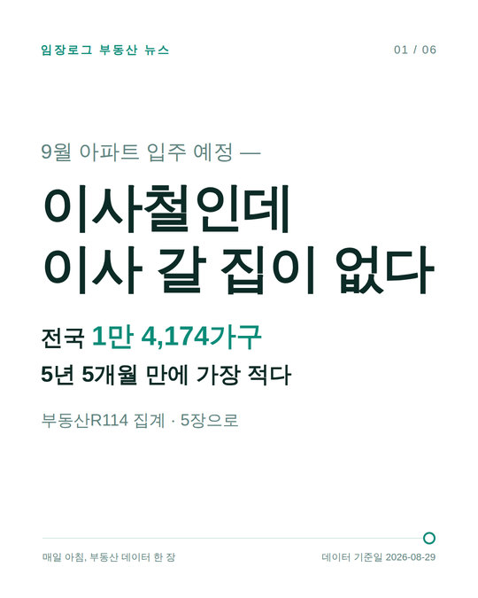
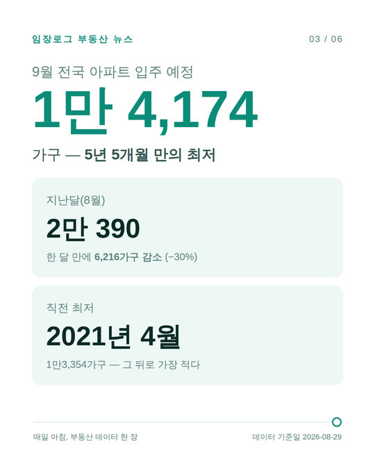
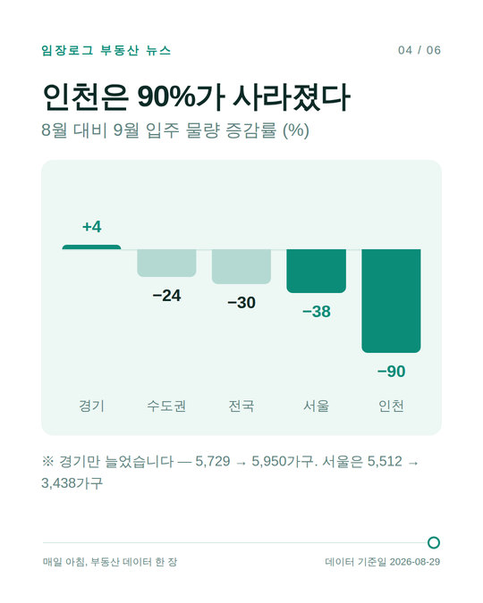
서체 제목 Gothic A1 900 · 본문 Noto Sans KR
모서리 20px (가장 둥글고 넉넉)
가장 깨끗합니다. 초록계열이라 숫자가 오르내리는 카드에서 눈이 편합니다.
바탕이 순백이라 표지가 비어 보이고, 인스타 흰 화면과 경계가 사라집니다.
바꾸려면: insta-mint 팔레트를 insta 로 옮기면 됩니다.
후보 C
블루프린트
지금 쓰던 '터미널 데이터'를 그대로 밝게 뒤집은 안. 고정폭 숫자·격자·직각 유지.
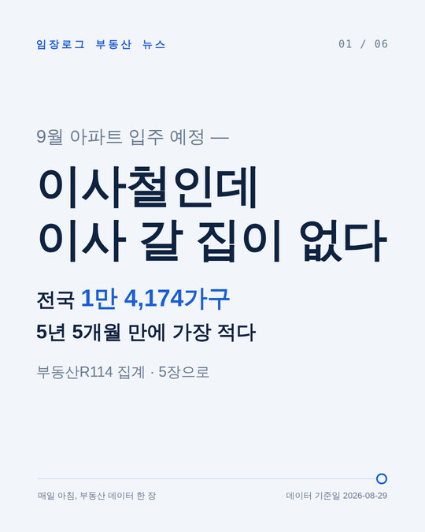
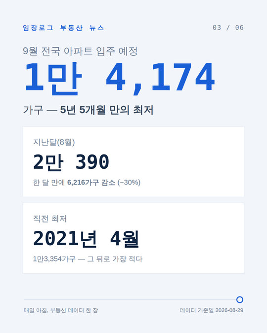
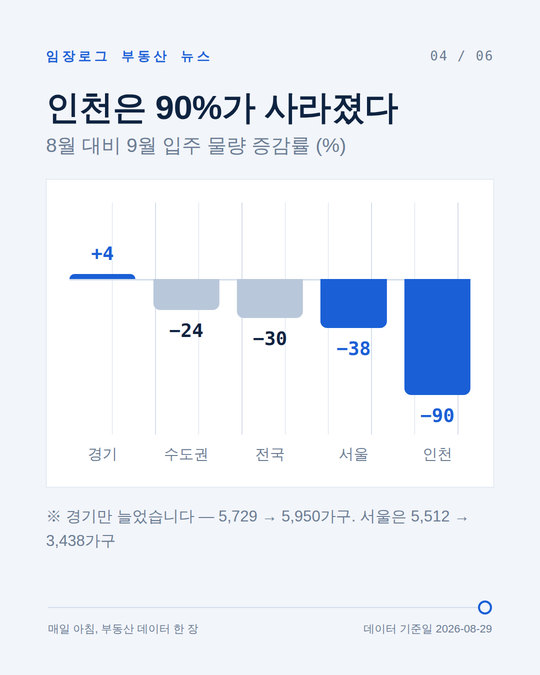
서체 IBM Plex Sans KR + 숫자 IBM Plex Mono
모서리 직각 · 격자 차트 영역에만
데이터 성격이 가장 또렷합니다. 코발트가 밝은 회청색 위에서 선명해
숫자 가독성은 다섯 안 중 제일 좋습니다.
고정폭 서체는 한글에 없어서 '1만 4,174'처럼 한글과 숫자가 섞이면
글자 사이가 벌어집니다(지금 테마도 같습니다).
바꾸려면: insta-blueprint 팔레트를 insta 로 옮기면 됩니다.
후보 E
코랄 소프트
복숭아색 바탕 + 흰 카드에 옅은 그림자. 가장 부드럽습니다.
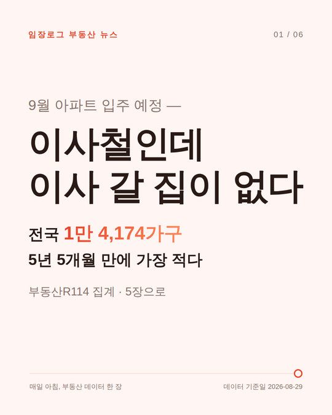
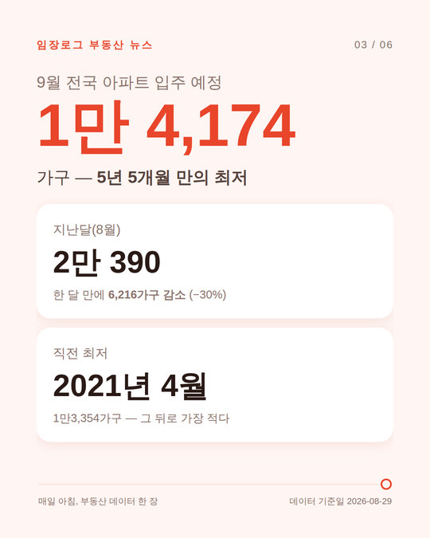
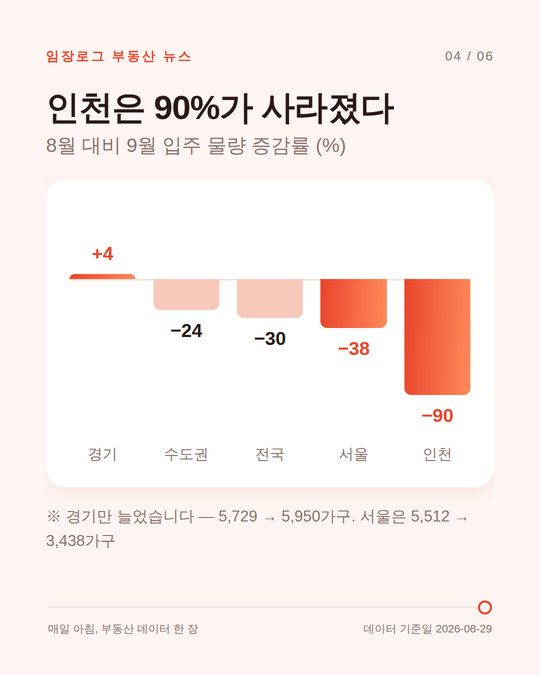
서체 제목 Gothic A1 900 · 본문 Noto Sans KR
모서리 28px · 그림자 있음
가장 친근합니다. 저장·공유가 많은 생활정보 카드와 잘 맞습니다.
붉은 계열이라 하락 수치와 색 의미가 겹칩니다 — 부동산 데이터에서는
'빨강=하락'으로 읽힐 여지가 있습니다.
바꾸려면: insta-coral 팔레트를 insta 로 옮기면 됩니다.
참고 · 어제까지 쓰던 안
이전
터미널 데이터 (검정)
되돌릴 경우를 대비해 insta-dark 로 남겨 뒀습니다.
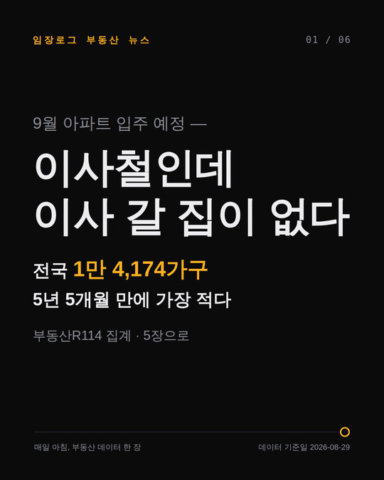
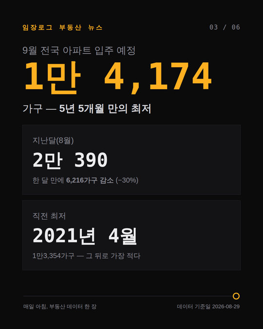
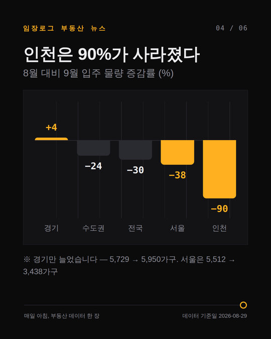